Sumber: BPS Kota Salatiga, 2024
Kota Salatiga adalah kota di Provinsi Jawa Tengah, Indonesia, yang menjadi enklave dari Kabupaten Semarang. Kota Salatiga terletak 49 kilometer di sebelah Selatan Kota Semarang dan 52 kilometer di sebelah Utara Kota Surakarta, serta berada di jalan negara yang menghubungkan antara Kabupaten Semarang dengan Kota Surakarta. Jumlah penduduk kota Salatiga tahun 2024 berjumlah 198.370 jiwa.
Wilayah Salatiga menempati letak posisi yang sangat strategis karena berada pada persilangan jalan raya dari enam jurusan, yaitu Semarang, Bringin, Sragen, Surakarta, Magelang, dan Ambarawa. Pada saat ini, Salatiga terdiri atas empat kecamatan (Argomulyo, Sidomukti, Sidorejo, dan Tingkir) dan 23 kelurahan (Blotongan, Bugel, Cebongan, Dukuh, Gendongan, Kalibening, Kalicacing, Kauman Kidul, Kecandran, Kumpulrejo, Kutowinangun Kidul, Kutowinangun Lor, Ledok, Mangunsari, Noborejo, Pulutan, Randuacir, Salatiga, Sidorejo Kidul, Sidorejo Lor, Tegalrejo, Tingkir Lor, dan Tingkir Tengah).
Pada tahun 1895 Salatiga digabung dengan Kabupaten Semarang berdasarkan Staatsblad No. 35 tanggal 13 Februari 1895. Menjelang akhir 1901 Salatiga sebagai afdeling kontrol dihapuskan dan digabungkan dengan Ambarawa. Berselang dua tahun kemudian, Salatiga secara resmi dipimpin oleh asisten residen. Afdeling Salatiga dibagi menjadi dua afdeling kontrol, yaitu Salatiga dan Ambarawa. Salatiga membawahi Distrik Salatiga dan Distrik Tengaran, sedangkan Ambarawa membawahi Distrik Ambarawa dan Distrik Ungaran. Pada perkembangannya, Salatiga beralih status menjadi stadsgameente setelah dikeluarkannya Surat Keputusan Gubernur Jenderal Hindia Belanda tanggal 25 Juni 1917 No. 1 yang dimuat dalan Staatsblad No. 226 tahun 1917. Status staadsgementee meningkat menjadi gemeente pada tahun 1926. Adapun daerah yang dapat ditetapkan sebagai daerah otonom adalah kota yang mempunyai sifat kebaratan, banyak penduduk Eropa dan di sekitarnya harus ada perkebunan. Peningkatan status Salatiga sebagai gameente sempat dipertanyakan karena penduduknya yang sedikit dan wilayahnya yang kecil. Meski penetepan ini bernuasna politik untuk kepentigan orang kulit putih, tetapi Salatiga sebenarnya telah memenuhi syarat sebagai gameente, yaitu: penduduk, keadaan setempat dan keuangan.Dari faktor penduduk, jumlah penduduk kulit putih di Salatiga pada saat itu mencapai kurang lebih 17 persen. Hal ini sudah memenuhi persyaratan untuk menjadi sebuah gameente yang menetapkan minimal penduduk kulit putih (Eropa maupun etnis lain) adalah 10 persen. Salatiga yang pada saat itu masih dipenuhi perkebunan-perkebunan menjadi pertimbangan peningkatan status menjadi gameente. Hal ini terkait dengan kedaadan setempat yang dapat menunjang perkembangan gameente nantinya. Faktor keuangan terutama berkaitan dengan perpajakan, Salatiga dianggap sudah bisa memenuhinya.
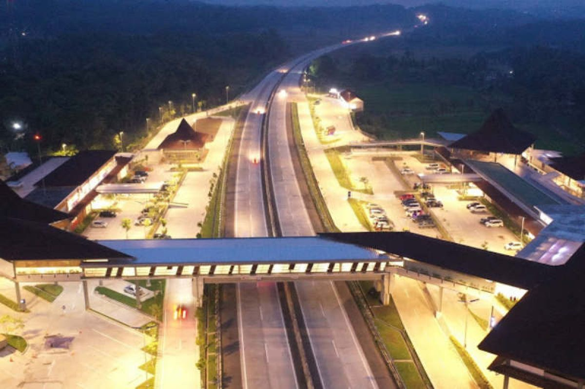
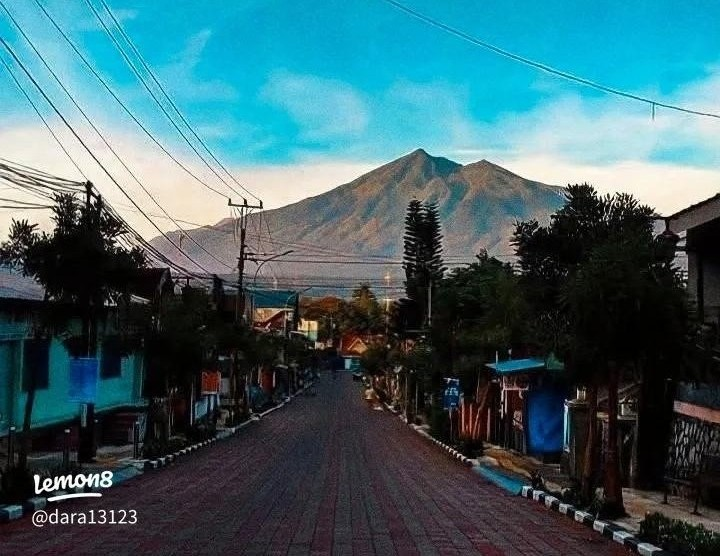
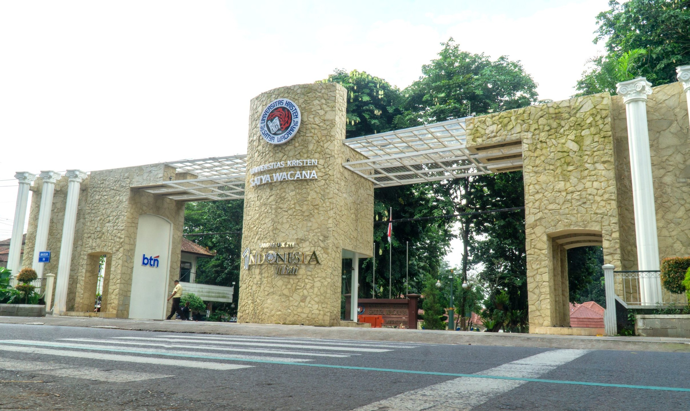
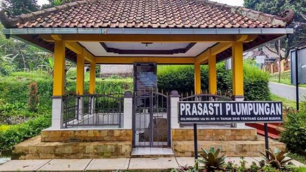
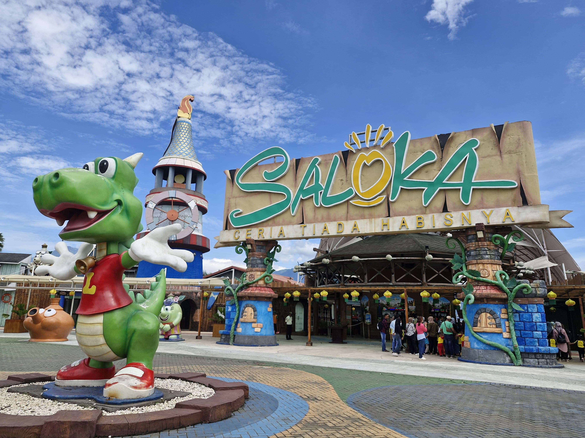
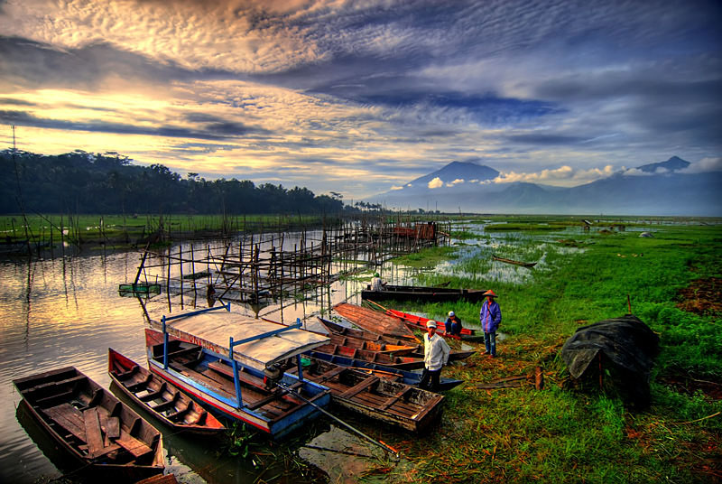
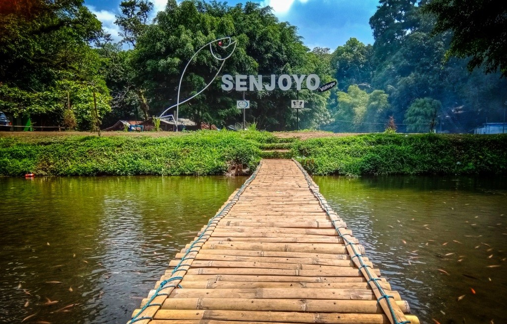
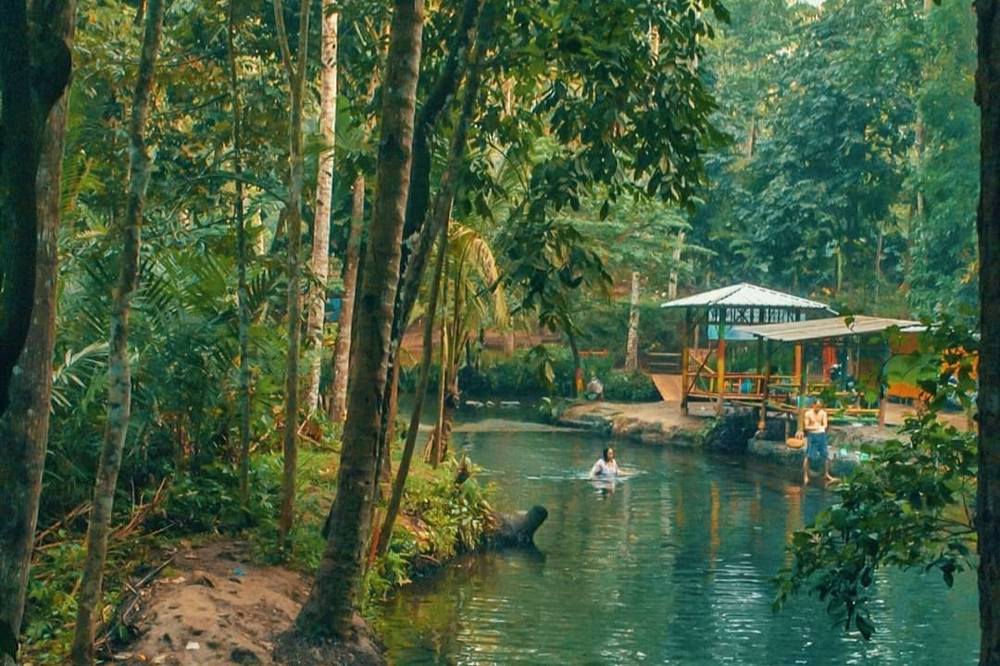
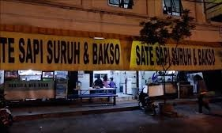
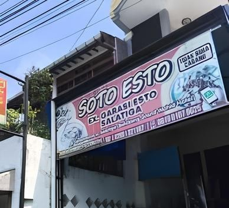
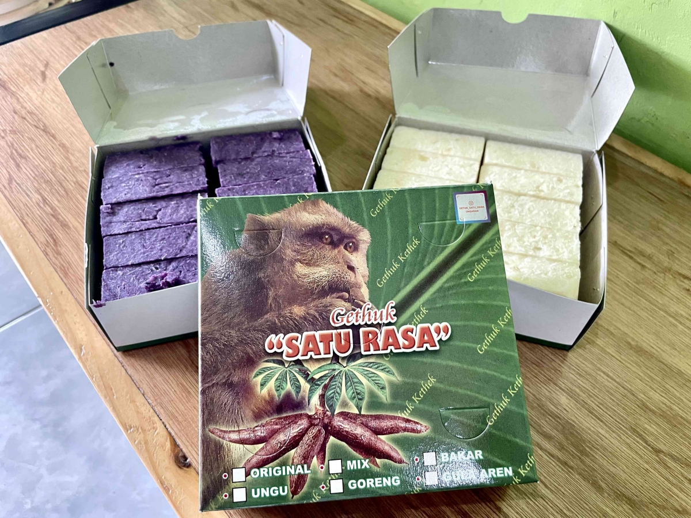
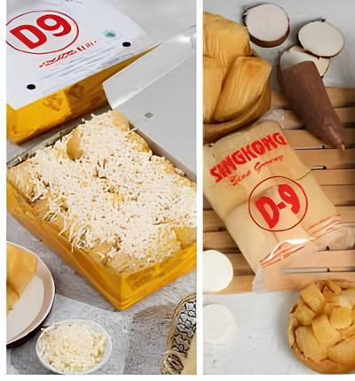
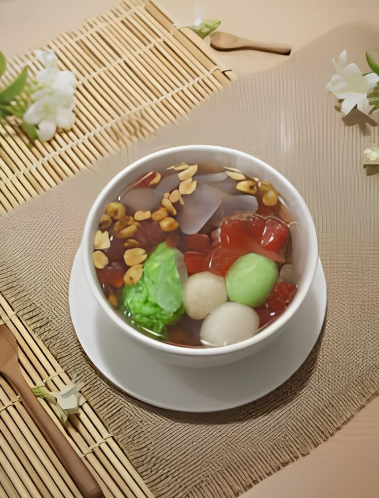
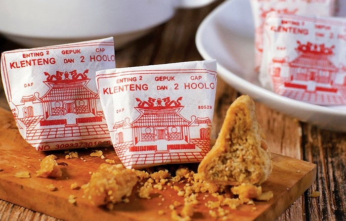